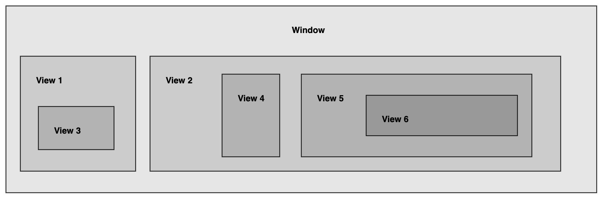

响应者链
与手机 APP 进行交互中，我们会通过手势、传感、远程控制来和 APP 进行交互；决定由谁来响应这个事件的机制被称为响应者链
输入「事件」，输出「响应者」，然后来决定谁来响应

继承 UIResponse 的对象被称为响应者，需要决定由谁来响应该事件，称为第一响应者
原理
页面之间呈现的是树状结构
首先，用户在进行 APP 交互时，肯定有一个 View 是最靠近用户的
比如说我们在最靠近 View3 触发了一个点击手势，那我们要怎么确认是 View3 是我们要找的 View
用户触发事件 UIEvent
UIEvent 由一个或多个 UITouch 组成
UITouch 说明一个手指的变化情况，UITouch 绑定 UIResponse
通过 IO.Kit 发送事件到 Window Server
Window Server 通过将事件发送给合适的 UIApplication
事件被包装为 Event Source 发送到 UIApplication Main Thread RunLoop
Event Source 包含很多 UIEvent
通过
histTest:view和pointInView:找到对应的视图然后再通过 Response Chain 响应者链，找到对应的响应者；HitTestView -> Super View -> UIWindow -> UIApplication -> UIApplication.Delegate
执行 UIResponse 协议方法
/// touchesBegan:withEvent: 在开始阶段调用触摸对象。 /// touchesMoved:withEvent: 在移动阶段调用触摸对象。 /// touchesEnded:withEvent: 在 Ended 阶段调用触摸对象。 /// touchesCancelled:withEvent: 当某些外部事件（例如，来电）导致操作系统取消多点触控序列中的触摸对象时调用- 通过 Target-Action 找到对象 Selector 实现